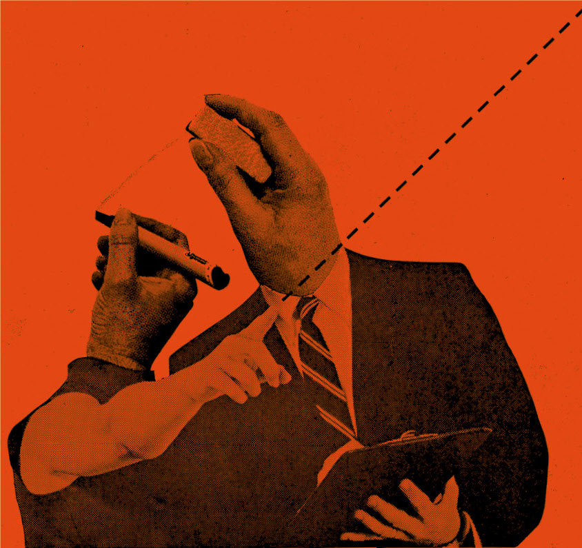
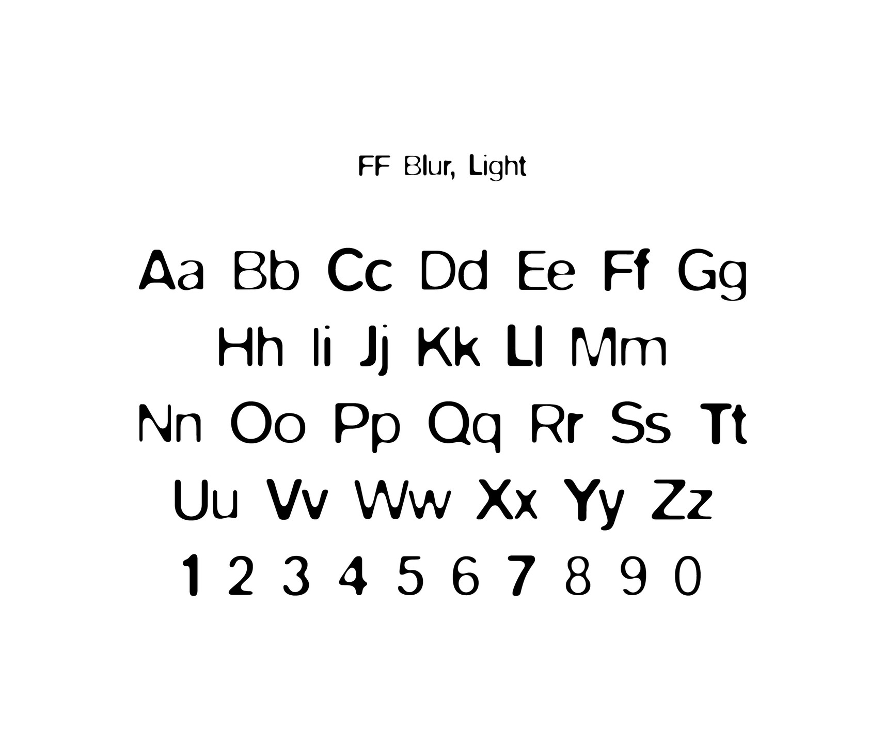
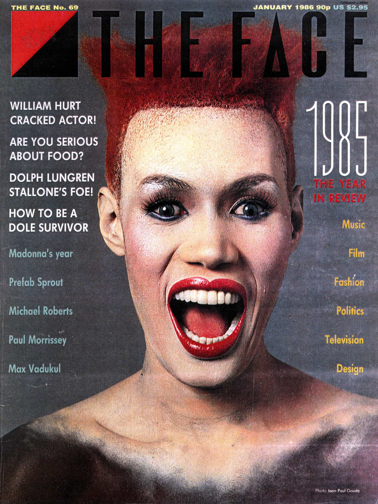

Typography is a hidden tool of manipulation within society
Typography is a hidden tool of manipulation within society
Typography is a hidden tool of manipulation within society
Typography is a hidden tool of manipulation within society
Typography is a hidden tool of manipulation within society
Typography is a hidden tool of manipulation within society
Typography is a hidden tool of manipulation within society
Typography is a hidden tool of manipulation within society
Typography is a hidden tool of manipulation within society
manipulation
manipulation
tool
typography
tool
hidden
typography
society
typography
"Typography is a hidden tool of manipulation within society"
Overview
Neville Brody gained influence as a typographer in the 1980s due to his ability to transform visual communication and graphic design. Born in London, where he studied at The London College of Printing, Brody developed his distinction through editorial design. Brody produced a unique style that was able to combine experimental graphic elements with typography. This distinct approach seamlessly set himself apart from other designers and helped reimagine typography's traditional design norms.
The Face Magazine appointed Brody as the magazine's art director in 1981 where he gained much of his influence in the design world. Brody pioneered layouts that were transformative, leading to a major impact on contemporary design. From 1981-1986 as art director, Brody's reach was not linear in the fields he inspired. Fields such as fashion and music drew creative influence through his designs and visual style of the era. Brody viewed traditional typographic practices as a field that could be reimagined to become more expressive and experimental, straying from its traditional conventions.
In addition, Brody solidified his presence in the world of design by producing original typefaces such as, Blur, Industria, Arcadia, and FF Dirty most notably. Despite his disdain for typography and its traditional restraints, Brody reframed his approach to the artform by treating it as an image on the page. Brody utilized design elements of digital manipulation, geometry, and distortion to help communicate his boundary-pushing and experimental approach to typography. Through his type design Brody not only transformed the typographic world but also shaped contemporary typographic styles that are utilized and inspire designers in today's day and age. Despite Brody's rebellious approach to an artform known for its traditional styles, the designer has left a long-lasting impression on how typography is synthesized and integrated into modern design.

Typography Contribution
Neville Brody pioneered a reconfiguration of how type could function and be visually interpreted. He believed typography should be rooted in expression instead of being utilized as a tool for readability alone. Type was conventionally treated as a design practice limited to its principles of clarity, neutrality, and order. During the 1980's Brody struggled with these traditions and aimed to break free of their constraints through positioning typography as a medium for experimentation.
This approach would reframe the design practice to become more progressive and centered around visual communication and identity. During his time at The Face Magazine, Brody's experimental approach was brought to the forefront of design. Traditional grid systems and hierarchies were all deconstructed and recomposed into a new and visually striking form. Brody manipulated type spacing, letterforms, and structure with graphic elements, a visual strategy often adopted in avant-garde editorial imagery. These methods allowed for typography to display emotional and cultural context instead of simply a means to relay legible information. Tradition turned to experimentation and inspired typographers to take a more creative approach to how type could be displayed across different mediums.
Brody focused on how visual communication influenced individuals through utilizing unconventional typographic design methods, instead of communication within established norms. He rejected the status quo and promoted deeper audience engagement, believing communication must develop in alignment with broader cultural and societal shifts. This led to the development of typography as a flexible and more expressive tool. Brody's shift in perspective towards typography posited design can break away from traditional conventions and maintain cultural production that reflects identity, media, and societal change effectively.
Typographic Legacy
Neville Brody's alternative approach to the field of typography has redirected the course of contemporary graphic design by encouraging unconventional design practices and promoting cultural and societal visual messaging to designers. This approach has led designers to pivot from rigid constraints and explore methods and concepts that centralize around visually engaging forms of communication. Typography has transformed from a strict design practice to an expressive artform that serves as a defining element of identity and experimentation.
Branding and editorial design most prominently have been impacted by the works of Brody in contemporary society. Upon Brody's designs being positioned within contemporary culture through his role at The Face magazine, notable designers such as Andrew Clark, and David Carson drew inspiration from the pioneer's rebellious energy. By adopting Brody's diverse visual styles such as grid breaking and grunge typography, an increase in visually dynamic approaches emerged, helping solidify designers' identity. This Influence is demonstrated in album artwork, magazines, and advertising campaigns all rooted in typography serving as a key driver in shaping visual form, and conceptual meaning. Visual hierarchy and structure were forever transformed, now shaping meaning while inviting viewer interaction.
Moreover, digital design has also significantly benefited from Brody's work. Interactive media, motion design, and web design have adopted Brody's approach to visual expression and experimentation as design transitioned to digital forms. The combination of type with visual systems, bold typographic choices, innovative layouts, distorted letterforms, and layered compositions, have all been integrated in digital design as a reflection of Brody's works and enduring impact. Design culture has increased in flexibility and creative exploration because of Brody's designs. Operating within a design landscape governed by strict conventions, Brody established himself through an alternative, defiant style. This approach proved effective, despite a system that conventionally encouraged adherence to formal rules of expression.
Typeface Analysis

Neville Brody established his presence in the world of design by producing original typefaces, most notably his typeface FF Blur. FF Blur broke free of all traditional constraints that relied on readability and clarity. Brody's focus remained on visual and stylistic expression when producing his original typeface, abandoning typical conventions. The typeface consisted of letterforms that visually read as out of focus or in motion due to Brody strategically distorting or blurring its letterforms, hence the typefaces name. FF Blur was produced by Brody at the height experimentation in the graphic and typographic world of design. The atypical design re-allocated typographies focus of sharpness, neutrality, and precision, reflecting Brody's grunge approach to design.
The typefaces design elements develop a sense of open interpretation, through softened edges of its letterforms, and a sans-serif foundation that blurs its letters' edges as its most prominent characteristic. The letterforms are evenly distributed with consistent spacing; while blurred edges distort and deviate from geometric norms linked with typical sans-serif typefaces. Brody disrupts sans-serif conventional framework with FF Blur. Letters such as "o" and "a" are visually subdued to create a softer presence. While this strategy affected visual clarity of the typeface, the style encouraged a focus on overall perceived form to viewers and users.
Brody effectively conveys prominence of rhythm and spacing through his blurred edges which establish a sense of motion within the letterforms. Despite the spatial relationship of neighboring letterforms, they maintain unity through Brody's blurring effect. The minimal contrast of the letterforms' stroke weight strengthens visual cohesion while maintaining its sans-serif foundation. Conversely, expressive visual communication is displayed through the FF Blur's distortion and evocative qualities that uphold Brody's stylistic tendencies.
Composition Analysis

This composition by Neville Brody from his time at The Face Magazine features singer/model Grace Jones. Brody's use of visual imagery in conjunction with typography is on full display. The image is placed vertically as a central figure on the layout as a point of emphasis; however, Brody's typographic design dynamically contrasts the layout through its bold horizontal letterforms. Brody's design incorporates the magazine's masthead directly across the model's hair seamlessly combining typography and imagery, rather than isolating the two. Brody communicates his experimental approach through skillfully integrating the two techniques.
The scale of the horizontal masthead facilitates clear visual hierarchy, while secondary text is arranged in vertically stacked columns subtly framing the model's face, without compromising balance. Negative space framing the subject's face also maintains the images visual dominance without multiple elements adding clutter to the layout and further supporting the images frame. Despite Brody's atypical approach to legibility, spacing between lines is cohesive and supports clear readability. Visual hierarchy is also conveyed through text size as the headline is positioned at the top of the page in larger text while secondary content progressively fades as the eye moves towards the bottom of the composition.
Through Brody's design, the layout's expressive nature is intensified through effective use of colour contrast. The headlines dark colour against the arrangements light background further distinguishes visual clarity and balance, allowing secondary text to introduce visual variation. The composition blends order and exploration of expressive design approaches through subtle typographic design choices that enhance the layout's visual impact.
 N
E
L
V
i
L
E
N
E
L
V
i
L
E